Darba uzsākšana
Lomu centrs
Lai sāktu lietot Latvian VAT Reporting Localization, nav nepieciešami specifiski lomu centri, jo funkcionalitāte ir pieejama izmantojot Meklēšana funkciju.
Konfigurācijas pakotnes importēšana
Piezīme
Konfigurācijas pakotne LV.LVI.VAT var tikt importēta tikai tad, ja sistēmā ir jau attiecināta LV.LVI.STANDARD konfigurācijas pakotne. Ja nav, tad visi uzstādījumi, kas minēti zemāk ir jāveic manuāli.
Attiecinot konfigurācijas pakotni LV.LVI.VAT, visi svarīgākie uzstādījumi tiek sagatavoti, lai varētu izmantot Latvian VAT Reporting Localization.
- Klikšķiniet uz pogas Meklēt lapu vai atskaiti... 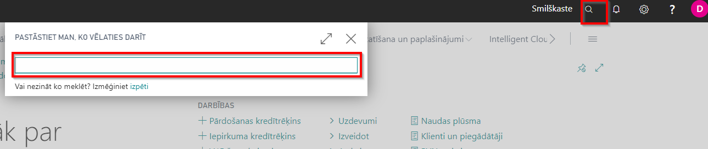
- Ierakstiet Konfigurācijas pakotnes un izvēlieties to no sadaļas Lapas un uzdevumi 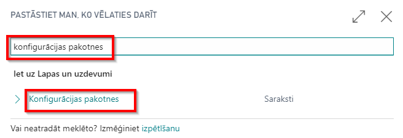
- Konfigurācijas pakotņu sakarstā iezīmējiet LV.LVI.VAT rindiņu un nospiediet pogu Attiecināt pakotni. 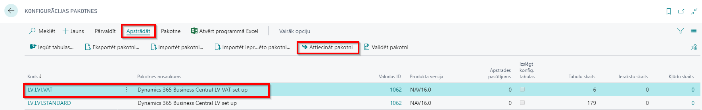
Konfigurācijas pakotne nodrošina sekojošus uzstādījumus un funkcijas:
- Valstis/Reģionus;
- Virsgrāmatas uzstādījumus;
- PVN kontējumu uzstādījumus;
- PVN deklarāciju veidnes;
- PVN deklarācijas nosaukumus;
- PVN deklarācijas rindiņas;
- PVN atskaites uzstādījumus.
Piekļuves tiesību kopas
Lietojot Latvian VAT Reporting Localization ir nepieciešams piešķirt lietotājiem vai lietotāju grupām sekojošas piekļuves tiesību kopas:
- LV_VB_VIEW – paredzēts, lai piešķirtu skatīšanās tiesības PVN buferiem un izmantotu vērtības izvēlnēs.
- LV_VB_EDIT- paredzēts PVN bufera izveidošanai, rediģēšanai un dzēšanai.
Priekšnosacījumi
Pēc konfigurācijas pakotnes attiecināšanas nepieciešams papildināt datus par uzņēmumu. Tas paveicams sekojoši:
- Klikšķiniet uz pogas Meklēt Lapu vai Atskaiti...
- Ierakstiet Uzņēmuma informācija un izvēlieties to no saraksta Lapas un uzdevumi 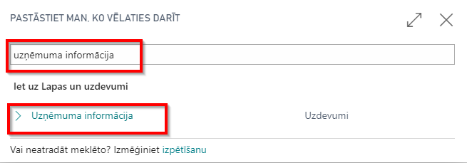
- Aizpildiet informāciju par uzņēmumu:
- Nosaukums;
- Adrese;
- Pasta indekss;
- Valsts;
- Reģistrācijas numurs;
- PVN reģistrācijas numurs.
Uzstādījumi
Virsgrāmatas uzstādījumi
Attiecinot LV.LVI.VAT konfigurācijas pakotni, virsgrāmatas uzstādījumi tiek papildināti ar PVN pārskata pielikumu uzstādījumiem.
- Klikšķiniet uz pogas Meklēt Lapu vai Atskaiti...
- Ierakstiet Virsgrāmatas uzstādījumi un izvēlieties to no saraksta Lapas un uzdevumi 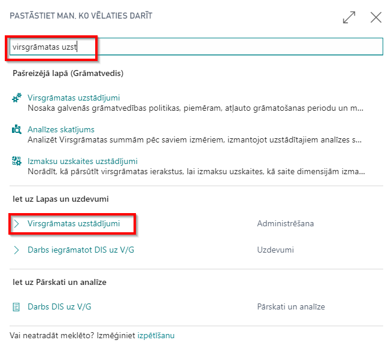
Lai sagatavotu PVN pārskatu pielikumus, ir jāaizpilda visa prasītā informācija virsgrāmatas uzstādījumu apakšsadaļā PVN buferis:
- PVN bufera numuri - norāda numuru sēriju PVN buferu numurēšanai;
- Noklusētais transakcijas limits - norāda robežlielumu EUR, virs kura darījums PVN pielikumā jāatspoguļo atsevišķi;
- Darījuma veids (ar reģ.Nr.) - norāda kodu T, kas domāts PVN 1-III daļai darījumiem, kas nepārsniedz 150 EUR;
- Darījuma veids (bez reģ.Nr.) - norāda kodu X, kas paredzēts PVN 1-III daļai darījumiem no 150 EUR, kuri nav jāuzrāda atsevišķi;
- Noklusētais partnera limits - norāda robežlielumu EUR, virs kura atsevišķos darījumus, kuri ir mazāki par robežlielumu, bet kopsummā lielāki par to, jānorāda pa darījuma partneriem;
- Darījuma veids norāda kodu V, kas paredzēts PVN 1-I un 1-III daļām – darījumi ar vienu partneri, kas nepārsniedz 150 EUR, par kopējo summu, kas pārsniedz 150 EUR;
- Atskaites dokumenta Nr. - norāda kādu dokumenta Nr. atspoguļot PVN 1-III daļā kā attaisnojuma dokumentu;
- Grupēt partnerus pēc - norāda vai partnerus grupēt pēc PVN reģistrācijas Nr. vai Nr. Šis uzstādījums ir būtisks, ja pastāv klientu vai piegādātāju kartiņas ar vienādiem PVN reģistrācijas numuriem.
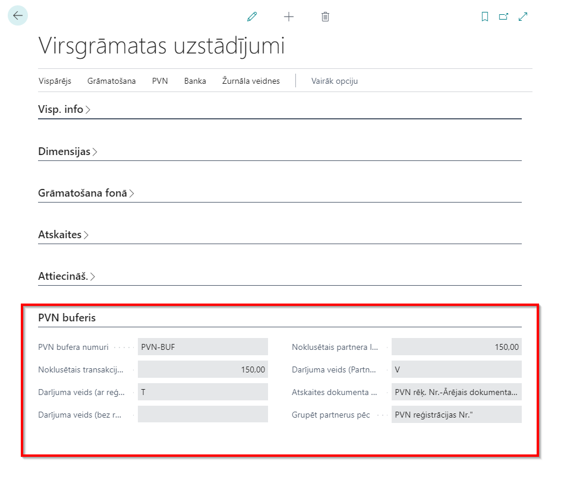
PVN atskaites uzstādījumi
Attiecinot LV.LVI.VAT konfigurācijas pakotni, PVN atskaitei tiek pielāgoti nepieciešamie uzstādījumi. PVN atskaites uzstādījumu Numerācijas sadaļā tiek aizpildīta sekojoša informācija:
- Num. sērija - norāda numuru sēriju, kas tiks izmantota EK pārdošanas sarakstu atskaitēm.
- PVN atgūšanas num. sērija - norāda numuru sēriju, kas tiks izmantota PVN atgriešanas ierakstiem.
- PVN pārskata perioda Nr. sērija - norāda, ja nepieciešama numuru sērija, kuru izmanto PVN atgriezto periodu ierakstiem.
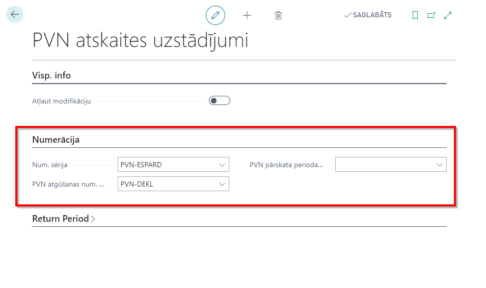
PVN atskaišu konfigurācija
Attiecinot LV.LVI.VAT konfigurācijas pakotni, PVN atskaišu konfigurācija tiek papaildināta ar iestatījumiem, kas nepieciešami PVN pārskatu sagatavošanai. Tiek aizpildīta sekojoša informācija:
- EK pārdošanas saraksts
- Piedāvāt rindas koda bloka ID - 70151471
- Satura koda bloka ID - 70151472
- Apstiprināšanas koda bloka ID - 143
- PVN atgūšana
- Piedāvāt rindas koda bloka ID - 70151474
- Satura koda bloka ID - 70151473
- Apstiprināšanas koda bloka ID - 744
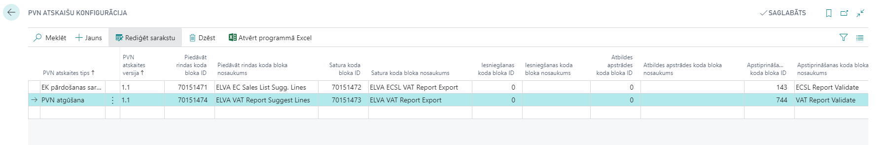
PVN kontējumu uzstādījumi
PVN biznesa kontējumu grupas un PVN produkta kontējuma grupas kombinācijas nosaka darījuma partneri un pašu darījumu PVN likuma izpratnē, kā arī, piemērojamo PVN likmi, grāmatošanu noteiktos kontos, PVN atsauču piemērošanu un PVN pārskatu pielikumu veidošanu.
Attiecinot LV.LVI.VAT konfigurācijas pakotni, PVN kontējumu uzstādījumi tiek izmainīti, pievienojot ar PVN saistītus uzstādījumus.
Ir jāaizpilda sekojoša informācija:
- PVN bizn. kontējuma grupa - norāda klienta vai pārdevēja PVN veidu, lai sasaistītu šo ierakstu veiktos darījumus ar atbilstošo virsgrāmatas kontu saskaņā ar PVN kontējumu uzstādījumiem.
- PVN prod. kontējuma grupa - norāda preces vai resursa PVN veidu, lai sasaistītu šo ierakstu veiktos darījumus ar atbilstošo virsgrāmatas kontu saskaņā ar PVN kontējumu uzstādījumiem.
- Apraksts - apraksta PVN kontējuma uzstādījumu.
- PVN identifikators - norāda kodu, lai varētu grupēt dažādus PVN kontējuma uzstādījumus ar līdzīgiem raksturlielumiem. Piemēram, PVN likme.
- PVN % - norāda atbilstošo PVN likmi attiecīgajai kontējumu brupu kombinācijai. Neievadiet procentu zīmi - tikai ciparus! Piemēram, ja PVN likme ir 25%, tad šajā lauciņā ievadiet tikai skaitli 25.
- PVN aprēķina tips - norāda, kā tiks aprēķināts PVN, pērkot vai pārdodot preces šo konkrēto kontējuma grupu kombinācijā.
- Pārdošanas PVN konts - norāda virsgrāmatas konta numuru, uz kuru pārdošanas darījumos tiks grāmatotas PVN summas šo konkrēto kontējuma grupu kombinācijā.
- Iepirkumu PVN konts - norāda virsgrāmatas konta numuru, uz kuru iepirkumu darījumos tiks grāmatotas PVN summas šo konkrēto kontējuma grupu kombinācijā.
- Apgrieztā PVN konts - norāda virsgrāmatas konta numuru, uz kuru reverso iepirkumu darījumos tiks grāmatotas PVN summas šo konkrēto kontējuma grupu kombinācijā.
- PVN atsauces kods - norāda PVN atsauces kodu, kas ir saistīts ar PVN kotējumu uzstādījumiem. Tas tiek izmantots pārdošanas rēķinu izdrukās.
- ES pakalpojums - norāda vai ikmēneša PVN atskaitēs šo kontējumu grupu kombināciju jāidentificē kā pakalpojumu.
- Korekcija pēc maksāj. atlaides - norāda, vai pārrēķināt PVN summas, kad grāmatojat maksājumus ar maksājumu atlaidēm.
- Darījuma veids - norāda darījuma veida kodu PVN pārskata pielikumam 1-I (I, A, N, K, Rx, C).
- Rēķins ir muitas deklarācija - atzīmē PVN kontējumu grupu kombinācijai, ar kuru tiks grāmatots PVN priekšnodoklis par preču importu, ko uzņēmums aprēķinājis saskaņā ar īpašo nodokļa režīmu. Tas nodrošina koda 6-muitas deklarācija parādīšanu laukā Dokumenta veids;
- Negrupēt PVN buferī - atzīmē tām PVN kontējumu grupu kombinācijām, ar kuriem iegrāmatotie darījumi PVN1 jāparāda atsevišķi neatkarīgi no darījuma summas (kokmateriālu un metāllūžņu tirdzniecība, būvniecības pakalpojumi);
- PVN deklarācijas rindas Nr. - norāda PVN deklarācijas rindiņas numuru (41, 42, utt) pielikumam 1-III.
PVN deklarāciju veidnes
Attiecinot LV.LVI.VAT konfigurācijas pakotni, PVN atskaišu iestatījumi tiek papildināti ar PVN deklarācijai nepieciešamiem iestatījumiem. Tiek veiktas izmaiņas sekojošos laukos:
- PVN deklarācijas atskaites ID - 70151475
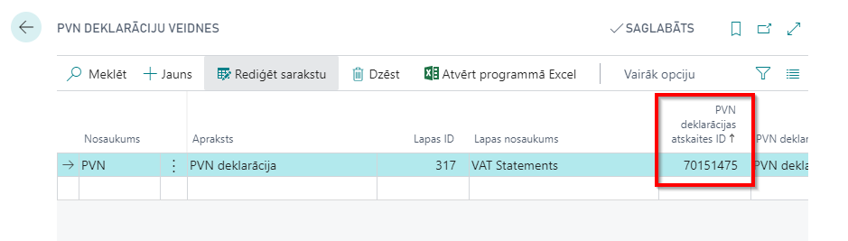
PVN deklarāciju nosaukumi
Attiecinot LV.LVI.VAT konfigurācijas pakotni, PVN atskaišu iestatījumi tiek papildināti ar PVN deklarācijai nepieciešamiem iestatījumiem. Tiek veiktas izmaiņas sekojošos laukos:
- Nosaukums - "PVN2018" 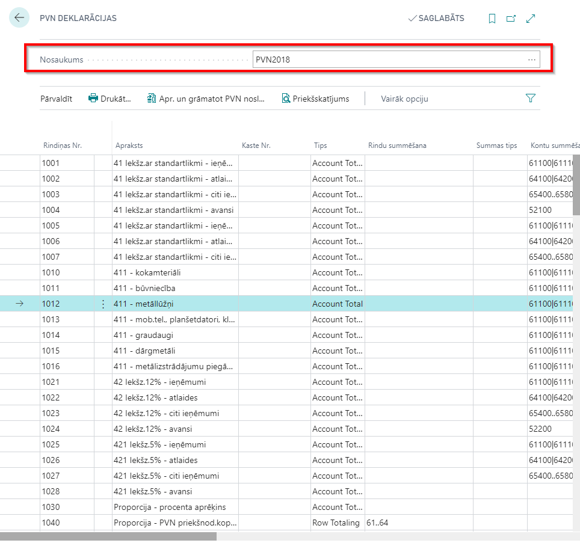
PVN deklarācijas rindiņas
Attiecinot LV.LVI.VAT konfigurācijas pakotni, PVN atskaišu iestatījumi tiek papildināti ar PVN deklarācijai nepieciešamiem iestatījumiem. Tiek veiktas izmaiņas sekojošos laukos:
- PVN deklarācijas rindiņas izvēlētajam PVN deklarācijas Nosaukumam - " PVN2018" 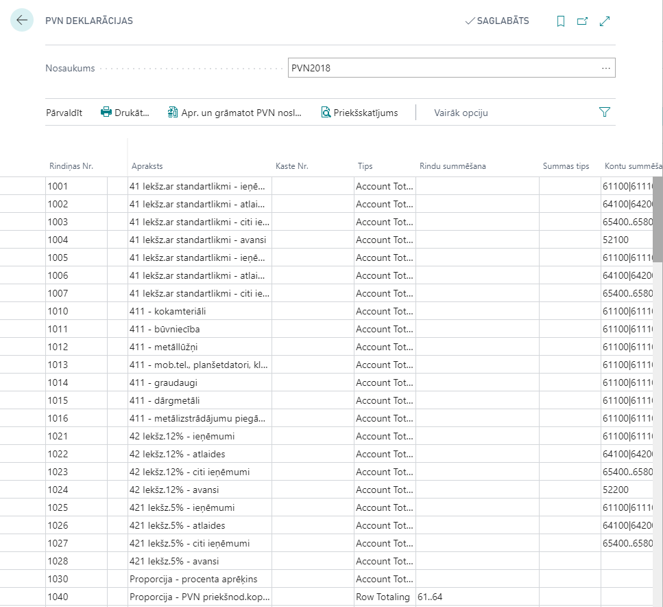
PVN deklarācijas rindiņu aizpildīšana
- Klikšķiniet uz pogas Meklēt Lapu vai Atskaiti...
- Ierakstiet PVN deklarācijas un izvēlieties to no saraksta Uzdevumi 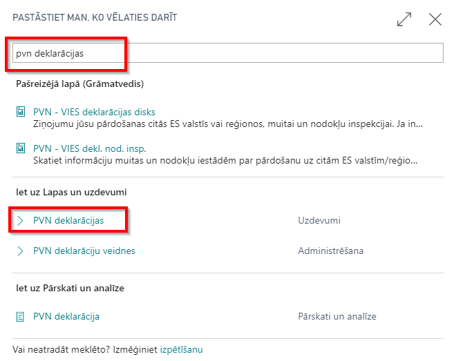
- Izvēlieties nosaukumu - PVN2018 un nospiediet pogu Rediģēt PVN deklarāciju 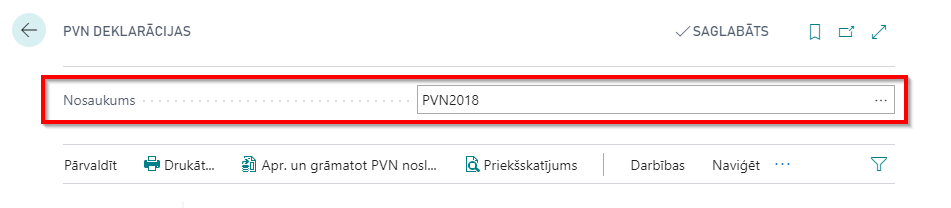
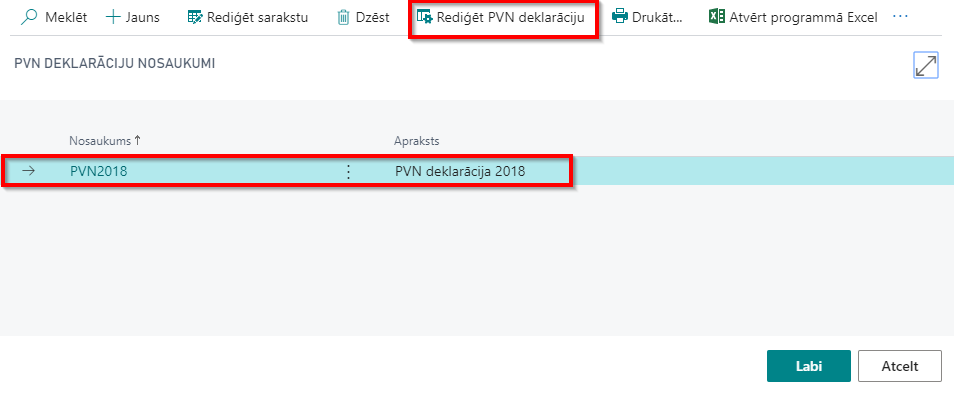
Lai nodrošinātu PVN deklarācijas atbilstību likumdošanai, ir svarīgi saglabāt jau iestatīto deklarācijas rindiņu galveno struktūru.
- Rindiņas Nr.– rindiņas kārtas skaitlis. PVN deklarācijas rindiņas var sakrist ar VID deklarācijas rindiņu skaitļiem. Rindiņām, kuras izmanto papildus aprēķiniem, var tikt izmantots jebkurš skaitlis.
- Apraksts – ievadītajam aprakstam ir jāsakrīt ar VID PVN deklarācijas rindiņu aprakstiem; rindiņām, ko izmanto papildus kalkulācijām, var tikt izmantots brīvi izvēlēts teksts.
- Kaste Nr. - šim laukam ir jānorādā, uz kuru VID PVN deklarācijas rindiņu attiecas aprēķinātā summa.
- Tips – norāda, kuri ieraksti tiek izmantoti kalkulācijā. Ir iespējamas sekojošas izvēlnes:
- Kontu summēšana – summē norādītus virsgrāmatas ierakstus;
- PVN ieraksti - summē PVN ierakstus;
- Rindu summēšana - summē PVN deklarācijas rindiņas;
- Apraksts - lieto rindiņām bez summām.
- Matemātika – rindā tiek veikti matemātiski aprēķini, izmantojot laukus Operators, 1.operands, 2.operands. Galvenokārt tiek izmantots PVN proporcijas aprēķinam.
- Rindu summēšana - ja Tips ir norādīts Rindu summēšana, tad šajā laukā ir jāieraksta rindas, kas ir jāsummē.
- Kontu summēšana - ja Tips ir norādīts Kontu summēšana, tad šajā laukā ir jānorāda virsgrāmatas kontu numuri, kas ir jāsummē.
- Summas tips - ja Tips ir norādīts PVN ieraksti, tad šajā laukā ir iespējams definēt:
- Bāze- ar nodokli apliekamās bāzes summas parādīšanai;
- Summa- PVN summas parādīšanai;
- Neatskaitāmā bāze- neatskaitāmās nodokļa bāzes summas parādīšanai;
- Neatskaitāmā summa- neatskaitāmā PVN summas parādīšanai.
- V/G summas tips - ja Tips ir norādīts Kontu summēšana, tad šajā laukā ir iespējams izvēlēties summēšanas objektu:
- Neto apgrozījumu - neto starpības parādīšanai;
- Debetu- tikai debeta summu parādīšanai;
- Kredītu - tikai kredīta summu parādīšanai.
- Operators, 1.operands, 2.operands - ar šo lauku palīdzību var veikt matemātiskus aprēķinus. Operandi satur rindas numuru (izņemot operatorus MIN un MAX), iespējams veikt šādus aprēķinus:
- Summēt - parāda rindas vērtību darbībai:= „1.operands” + „2.operands”;
- Atņemt - parāda rindas vērtību darbībai:= "Operand 1" - "Operand 2";
- Reizināt - parāda rindas vērtību darbībai:= "Operand 1" * "Operand 2";
- Dalīt - parāda rindas vērtību darbībai:= "Operand 1" / "Operand 2" (ja Operand 2 ir vienāds ar 0, tad rezultāts ir 0);
- Apr.% - parāda rindas vērtību darbībai:= "Operand 1" / "Operand 2" * 100 (ja Operand 2 ir vienāds ar 0, tad rezultāts ir 0);
- Pielietot % - parāda rindas vērtību darbībai:= "Operand 1" / "Operand 2" / 100;
- MIN - parāda vismazāko skaitli no rindām, kuras ir iekļautas laukā Rindu summēšana;
- MAX - parāda vislielāko skaitli no rindām, kuras ir iekļautas laukā Rindu summēšana.
- Visp. kontējuma tips, Visp.biz.kontējuma grupa, Visp.prod.kontējuma grupa, PVN bizn. kontējuma grupa, PVN prod. kontējuma grupa, ES trīspusējā tirdzniecība - lauki ierakstu filtrēšanai pēc kontējuma grupām;
- Drukāt ar – nodrošina iespēju izdrukā parādīt pretējo zīmi;
- Apaļot līdz - iespējams norādīt noapaļošanu, pēc noklusējuma 0.01;
- Noapaļošanas veids - Tuvākais, Uz augšu, Uz leju. Noapaļošanas lauki tiek izmantoti proporcijas aprēķinam;
- Aprēķināt ar - iespējams norādīt, ka aprēķinos tiek izmantota pretējā zīme;
- Rādīt nulli, ja - iespējams norādīt, ka tiek parādīta nulle, ja Summa ir negatīva vai pozitīva. Tiek izmantots deklarācijas rindām, kur norāda budžetā maksājamo, no budžeta atmaksājamo nodokli;
- Drukāt - atzīme, ka rindu nepieciešams izdrukāt deklarācijā, tiek atstāta tukša aprēķinu palīgrindām;
Piezīme
PVN deklarācijas struktūra būtu jāatjaunina gadījumā, ja:
- tiek ieviesta jauna vispārējā biznesa un/vai vispārējā produktu kontējumu grupa
- tiek ieviesta jauna PVN biznesa un/vai PVN produktu kontējumu grupa new VAT Business and new VAT Product Posting Groups are introduced
- virsgrāmatā tiek izveidoti jauni konti, kas saitīti ar pirkšanas, pārdošanas vai PVN darījumiem.
Kā lietot
Kā lietot: PVN buferi
Mērķis: ar PVN bufera palīdzību var sagatavot PVN deklarācijas pielikumus:
- PVN 1-I PVN 1-1 Nodokļa summas par iekšzemē iegādātajām precēm un saņemtajiem pakalpojumiem
- VAT 1-II Nodokļa summas par precēm un pakalpojumiem, kas saņemti no Eiropas Savienības dalībvalstīm
- VAT 1-III Aprēķinātais nodoklis par piegādātajām precēm un sniegtajiem pakalpojumiem
Pieejams no: Meklēšanas poga
Priekšnosacījumi: Lai varētu lietot šo funkcionalitāti, ir jāattiecina konfigurācijas pakotne LV.LVI.VAT
Jauna PVN bufera izveidošana
- Klikšķiniet uz pogas Meklēt Lapu vai Atskaiti...
- Ierakstiet PVN buferu saraksts un izvēlieties to no sadaļas Lapas un uzdevumi 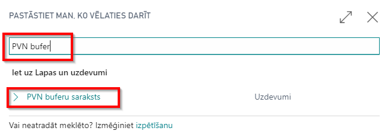
- PVN buferu sarakstā nospiediet pogu Jauns 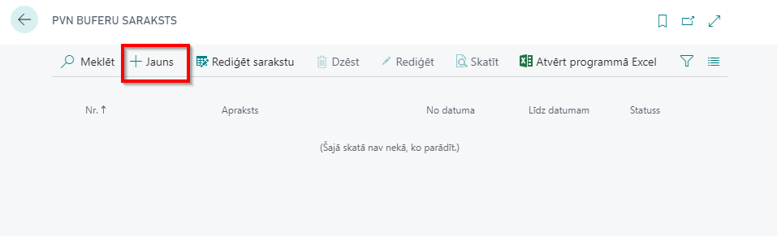
Norādiet Visp. info sadaļā prasīto informāciju
- Nr. - bufera numuram jāparādās automātiski, atbilstoši Virsgrāmatas uzstādījumiem. Ja tas nenotiek, ierakstiet PVN bufera numuru manuāli.
- Apraksts - ierakstiet PVN bufera aprakstu, piemēram, Marts 2020.
- No datuma - ievadiet PVN deklarācijas perioda sākuma datumu.
- Līdz datumam - ievadiet PVN deklarācijas perioda beigu datumu. 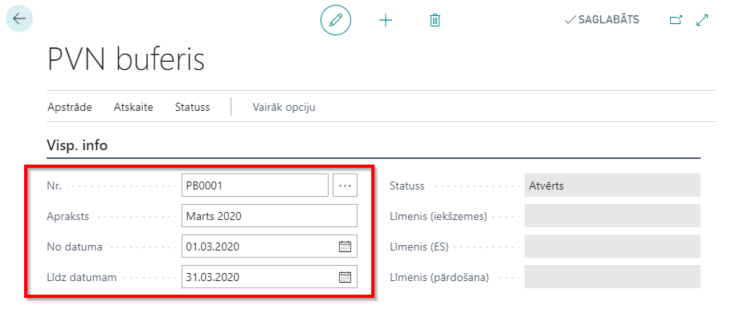
Aizpildiet Uzstādījumu sadaļu
- V/G konta Nr. filtrs (Iekšzemes) - norāda PVN priekšnodokļa kontus, kuros iegrāmatotie darījumi jāiekļauj PVN 1-I daļā “Nodokļa summas par iekšzemē iegādātajām precēm un saņemtajiem pakalpojumiem”.
- V/G konta Nr. filtrs (ES) - norāda PVN priekšnodokļa kontus, kuros iegrāmatotie darījumi jāiekļauj PVN 1-II daļā “Nodokļa summas par precēm un pakalpojumiem, kas saņemti no Eiropas Savienības dalībvalstīm”.
- V/G konta Nr. filtrs (Pārdošana) - norāda PVN kontus, kuros iegrāmatots par pārdošanas darījumiem aprēķinātais PVN, kas jāiekļauj PVN 1-III daļā “Aprēķinātais nodoklis par piegādātajām precēm un sniegtajiem pakalpojumiem”.
- V/G konta Nr. filtrs (Pārdošana PVN 0%) - norāda ieņēmumu kontus, kuros iegrāmatotie pārdošanas darījumi jāiekļauj PVN 1-III daļā “Aprēķinātais nodoklis par piegādātajām precēm un sniegtajiem pakalpojumiem”..
- Transakcijas limits - enter the limit of transaction amount, below which the individual transactions should be grouped together; this limit may be entered in General Ledger Setup
- Partnera limits - ievadiet darījumu vērtības limitu, kuru pārsniedzot darījumi vienam un tam pašam partnerim ir jāgrupē; šis limits var tikt iestatīts arī Virsgrāmatas uzstādījumos.
- Atskaites dokumenta Nr. - izvēlaties Atskaites dokumenta numuru, kurš tiks iekļauts PVN deklarācijas pielikumā " Ārējā dokumenta Nr., Dokumenta Nr." vai " Dokumenta Nr.".
- Grupēt partnerus pēc - izvēlieties vai ieraksti tiks grupēti pēc PVN reģistrācijas Nr. vai pēc Klienta/ Piegādātāja numura. 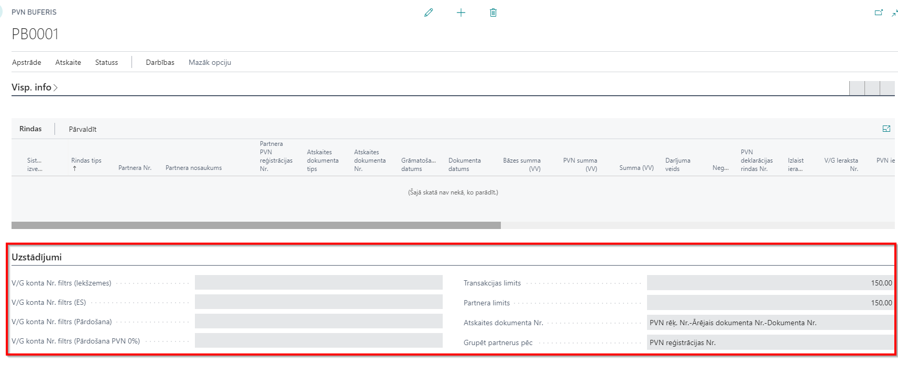
Izveidojiet rindiņas
- Rīkjoslas sadaļā Atskaites nospiediet pogu Piedāvāt rindas un tālāk nospiediet pogu Labi. 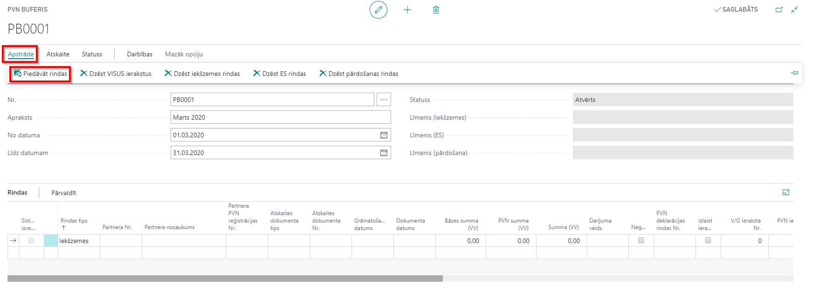 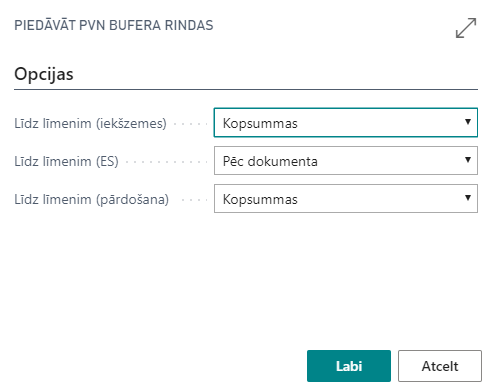
- PVN buferī tiek izveidotas darījumu rindiņas, kas satur sekojošu informāciju: 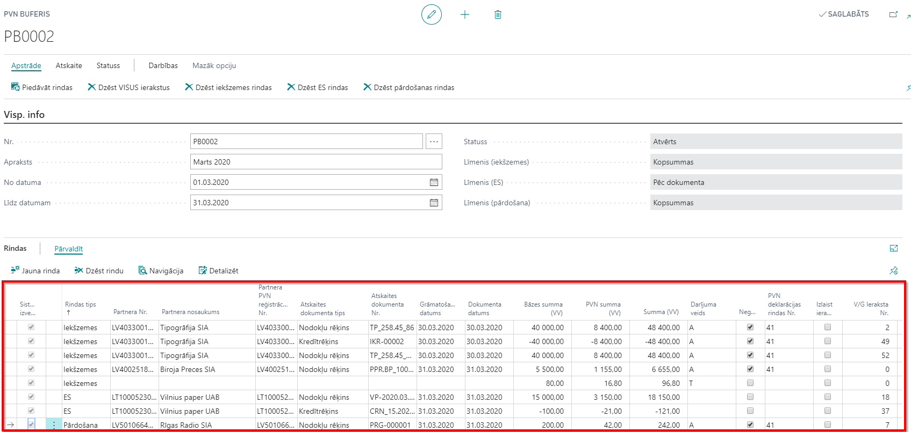
Paskaidrojums par izveidotajām rindiņām
- Rindas tips - PVN deklarācijas vajadzībām:
- Iekšzemes - norāda iepirkumus iekšzemē
- ES - norāda iepirkumus ES teritorijā
- Pārdošana - norāda pārdošanu iekšzemē
- V/G ieraksta Nr. - norāda virsgrāmatas ieraksta numuru vai atstāj lauku tukšu, ja rindiņa attiecas uz vairāku darījumu kopsummu;
- PVN Ieraksta Nr.- norāda PVN ieraksta numuru vai atstāj lauku tukšu, ja rindiņa attiecas uz vairāku darījumu kopsummu;
- Grāmatošanas datums - nodāda datumu, kad darījums ir iegrāmatots. Vai arī tiek atstāts tukšs lauks, ja rindiņa attiecas uz vairākiem darījumiem;
- Dokumenta datums- nodāda dokumenta datumu, vai arī tiek atstāts tukšs lauks, ja rindiņa attiecas uz vairākiem darījumiem;
- Izlaist ierakstu - ja atzīmēts, tad ieraksts netiek iekļauts PVN deklarācijā;
- Atskaites dokumenta Nr. - attaisnojošā dokumenta numurs;
- Dokumenta numurs. - sistēmas piešķirtais numurs;
- Transakcijas Nr. - norāda ar rindu saistītā avota ieraksta transkacijas Nr.;
- Ārējais dokumenta Nr.- norāda ieraksta ārējā dokumenta numuru, piemēram, piegādātāja rēķina numuru;
- Dokumenta tips- norāda saistītā dokumenta tipu:
- Maksājums - ja PVN tiek aprēķināts priekšapmaksas rezultātā
- Rēķins - ja PVN tiek aprēķināts pirkšanas/ pārdošanas darījuma rezultātā
- Kredītrēķins - ja PVN tiek aprēķināts pirkšanas/ pārdošanas atgriešanas darījuma rezultātā;
- Darījuma veids- saskaņā ar nodokļu administrācijas noteiktajiem kodiem
- Negrupēt - atzīmētās rindiņas netiek grupētas;
- ES trīspusējā tirdzniecība- atzīmētās rindiņas norāda uz darījuma saistību ar ES trīspusējo tirdzniecību;
- PVN deklarācijas rindas Nr. - norāda PVN deklarācijas rindiņas numuru;
- ES pakalpojums - norāda, ja rindiņa atbilst EU valstīs sniegtam pakalpojumam;
- Piegādātāja Nr. - piegādātāja numurs no sistēmas Piegādātāju saraksta;
- Klienta Nr.- klienta numurs no sistēmas Klientu saraksta;
- Partnera Nr.- norāda darījuma partnera numuru, kas ietilpst vienā PVN grupā;
- Partnera nosaukums- norāda darījuma partnera nosaukumu;
- Partnera PVN reģistrācijas Nr.- norāda darījuma partnera PVN reģistrācijas numuru;
- Valsts/ reģiona kods - norāda darījuma partnera valsts kodu;
- Valūtas kods - norāda valūtas kodu;
- Valūtas kurss- norāda izmantoto valūtas kursu, ja darījuma valūta atšķiras no vietējās valūtas;
- Bāzes summa (VV) - norādīta ar PVN apliekamā summa vietējā valūtā
- PVN summa (VV) - norādīta PVN summa vietējā valūtā;
- Summa (VV) - norādīta kopējā darījuma summa vietējā valūtā, ieskaitot PVN;
- Bāzes summa - norādīta ar PVN apliekamā summa
- PVN summa - norādīta PVN summa;
- Summa - norādīta kopējā darījuma summa, ieskaitot PVN;
- Atskaites dokumenta tips
- Nodokļu rēķins
- Kases čeks vai kvīts
- Bezskaidras naudas maksājums
- Kredītrēķins
- Cits
- Muitas deklarācija
- Sistēmas izveidots- atzīmēts, ja rindiņa tikusi sagatavota automātiski Latvian VAT Reporting Localization, ja nav atzīmēts, tad rindiņu lietotājs ievadījis manuāli.
Piezīme
Ja reiz PVN buferis ir sagatavots, tad papildus veiktie grāmatojumi, kas veikti sagatavotā bufera pārskata periodā, netiks automātiski iekļauti buferī. Lai iekļautu papildus iegrāmatotos rēķinus jau sagatavotaj PVN buferī, nepieciešams izdzēst visas PVN bufera rindiņas un sagatavot tās no jauna.
PVN buferis tiek sagatavots katram pārskata periodam atsevišķi. Gadījumā, ja jākoriģē iepriekšējo periodu PVN deklarācija, šim nolūkam ir ieteicams izveidot jaunu PVN buferi, lai nodrošinātu datu izsekojamību. Šī iemesla dēļ, nav ieteicams veikt jebkādus manuālus labojumus PVN bufferī, jo izveidojot jaunu buferi, šīs izmaiņas netiks pārnestas. Ja PVN buferī dokumenti ir norādīti nekorekti, tad grāmatvedim ir jāizskata katrs rēķins atsevišķi. Ir jāatceļ kļūdainais darījums un tā vietā jāiegrāmato pareizs darījums.
PVN deklarācijas pielikumu 1-I, 1-II, 1-III izdrukāšana
- PVN bufera statuss ir jānomaina uz Nodots. 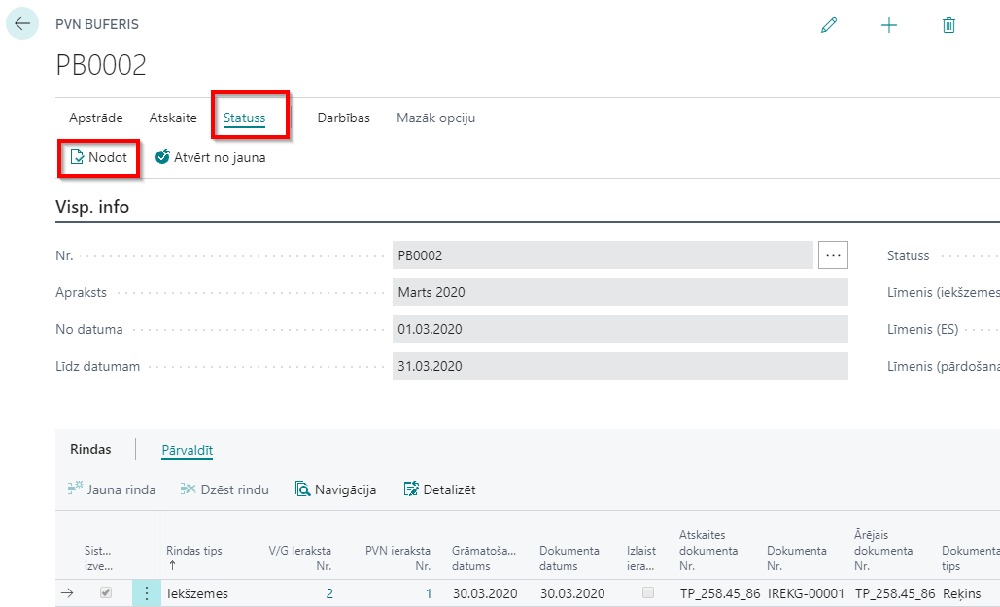
- Tad rīkojostā izvēlas opciju Drukāt PVN pielikumu. 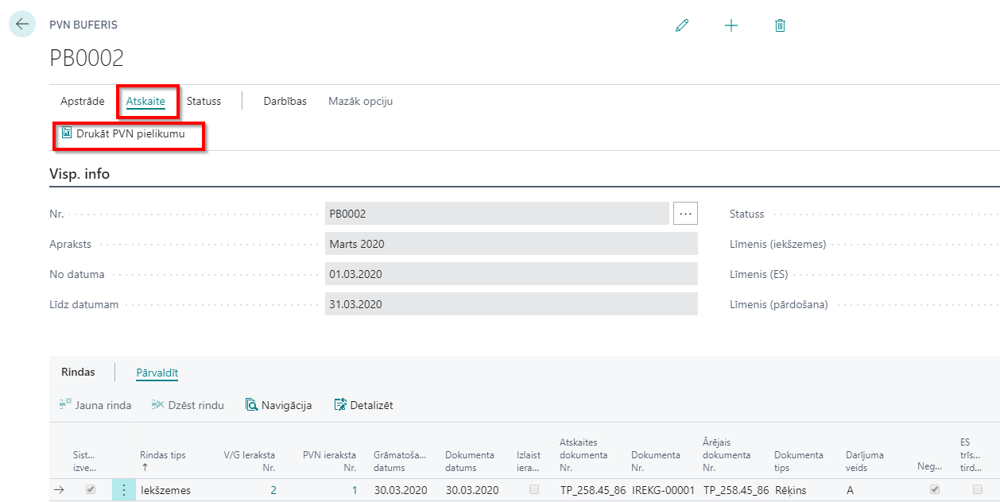
- Drukāšanas opcijas logā izvēlieties no saraksta darbinieku, kas sagatavo PVN deklarācijas pielikumu. Šajā gadījumā tiks izmantota sekojoša informācija no darbinieka kartiņas:
- Vārds
- Uzvārds
- Amats
- Telefona numurs.
- PVN deklarācijas pielikumu var Priekšskatīt vai izdrukāt PDF, Excel vai Word failu formātos. 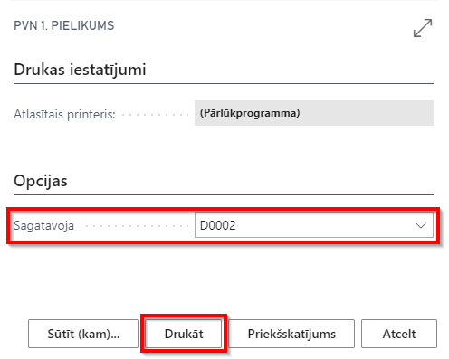
Kā lietot EK pārdošanas saraksta pārskatus
Mērķis: EK pārdošanas saraksta pārskatu izmanto sekojošos PVN deklarācijas pielikumos:
- PVN 2 - Pārskats par preču piegādēm un sniegtajiem pakalpojumiem Eiropas Savienības teritorijā
- PVN 3 - preču piegādes uz noliktavu citā dalībvalstī darījumos un PVN 2 pārskata koriģēšanai
Pieejams no: Meklēšanas poga
Priekšnosacījumi: Lai varētu lietot šo funkcionalitāti, ir jāattiecina konfigurācijas pakotne LV.LVI.VAT
Izveidojiet jaunu EK pārdošanas saraksta pārskatu
- Klikšķiniet uz pogas Meklēt Lapu vai Atskaiti...
- Ierakstiet EK pārdošanas saraksta pārskati un izvēlieties to no sadaļas Pārskati un analīze 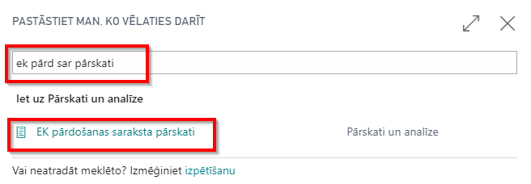
- EK pārdošanas saraksta pārskatu lapā izveidojiet jaunu pārskatu 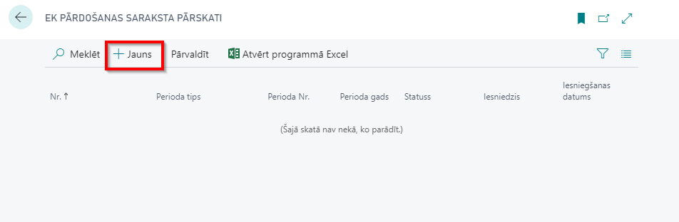
Aizpildiet vispārējās informācijas sadaļu
- Nr. - pārskata numuram jāparādās automātiski, atbilstoši PVN atskaites uzstādījumiem. Ja tas nenotiek, ierakstiet numuru manuāli.
- PVN atskaites versija - izvēlieties no saraksta atskaites versiju
- PVN atskaites tips
- Standarta - izmantojams PVN 2 pielikumam
- Labojoša - izmantojams PVN 3 pielikumam
- Papildus
- Sākotnējās atskaites Nr. - jāizvēlas tikai tad, ja PVN atskaites tips ir norādīts Labojoša.
- Perioda gads
- Perioda tips
- Perioda Nr.
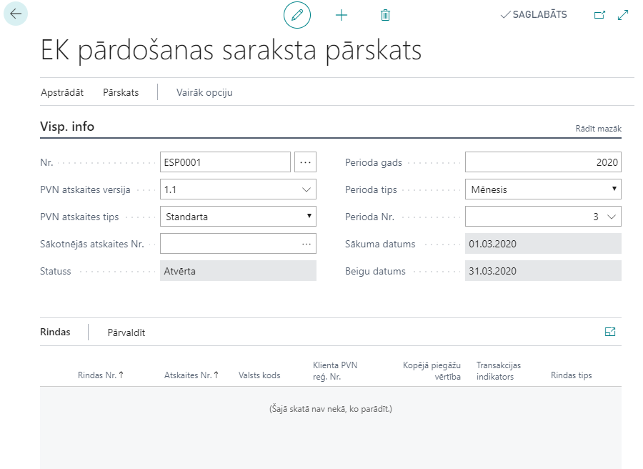
Izveidojiet rindas
- Rīkjoslā klikšķiniet uz pogas Apstrādāt un izvēlaties apakšfunkciju Piedāvāt rindas 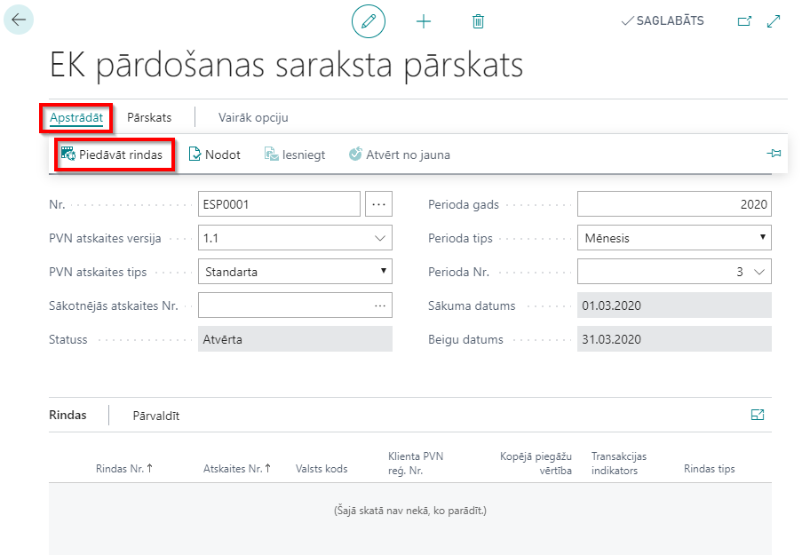
Sagatavoto rindu skaidrojums
- Rindas Nr.- norāda rindas kārtas numuru.
- Atskaites Nr. - norāda EK pārdošanas saraksta pārskata numuru
- Valsts kods - norāda darījuma partnera valsts kodu
- Klienta PVN reģ. Nr. - norāda klienta PVN reģistrācijas numuru
- Kopējā piegāžu vērtība
- Transakcijas indikators - norāda B2B preces vai B2B pakalpojumi
- Rindas tips - norāda vai rinda ir jauna, labojoša vai atcelta.
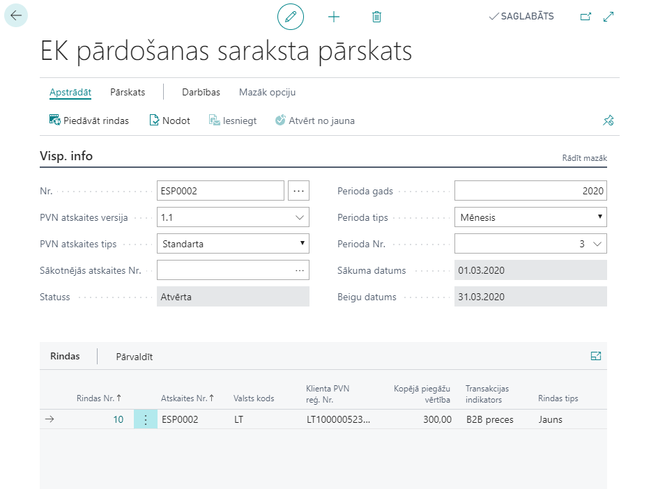
Izdrukājiet PVN deklarācijas pielikumus PVN2 un PVN3
- EK pārdošanas saraksta pārskata statusam ir jābūt Nodotam 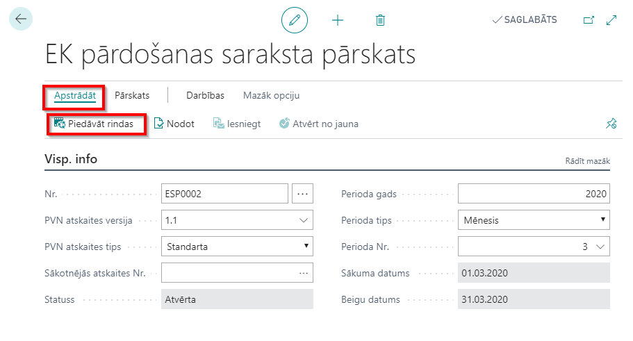
- Rīkjoslā nospiediet pogu Drukāt 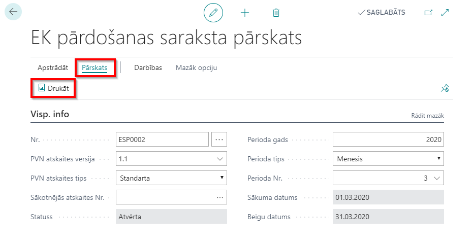
- Drukāšanas opcijas logā izvēlieties no saraksta darbinieku, kas sagatavo PVN deklarācijas pielikumu. Šajā gadījumā tiks izmantota sekojoša informācija no darbinieka kartiņas:
- Vārds
- Uzvārds
- Amats
- Telefona numurs.
- PVN deklarācijas pielikumu var Priekšskatīt vai izdrukāt PDF, Excel vai Word failu formātos. 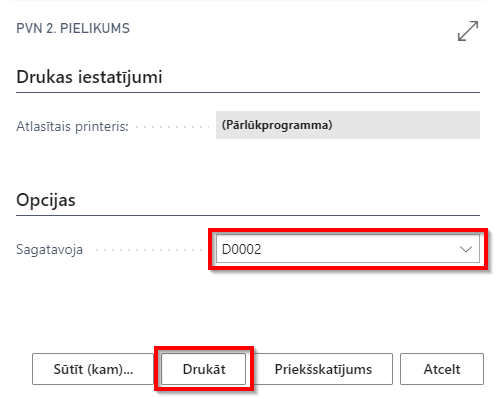
Piezīme
Atcerieties, kas atkarībā no PVN atskaites tipa, kas izvēlēts EK pārdošanas saraksta pārskatā, tiks sagatavots atbilstošs PVN deklarācijas pielikums:
- Standarta - tiks sagatavots pielikums PVN 2
- Labojoša - tiks sagatavots pielikums PVN 3
Kā lietot: PVN deklarācija
Mērķis: Lai sagatvotu PVN atgriešanu, PVN deklarācijā izmanto filtrus PVN ierakstos vai virsgrāmatas ierakstos.
Pieejams no: meklēšanas poga
Priekšnosacījumi: Lai varētu lietot šo funkcionalitāti, ir nepieciešams paveikt sekojošo:
Izdrukāt PVN deklarāciju
- Klikšķiniet uz pogas Meklēt Lapu vai Atskaiti...
- Ierakstiet PVN deklarācijas un izvēlieties to no sadaļas Lapas un uzdevumi
- Izvēlaties nosaukumu - PVN2018, un nospiediet OK
- Nospiediet Drukāt... 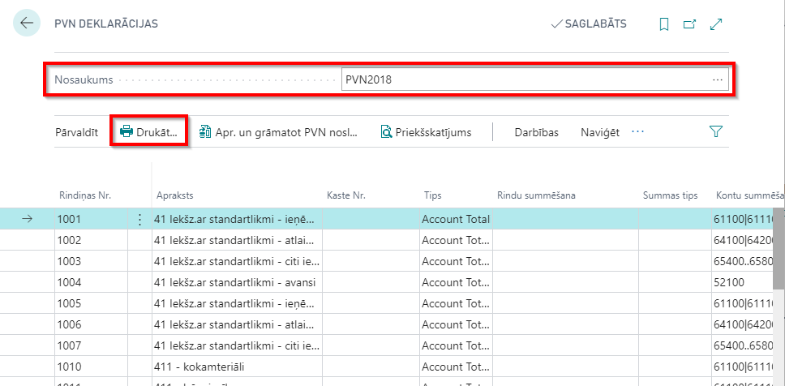
- Aizpildiet drukāšanas opcijas:
- Gads - ievadiet pārskata perioda gadu;
- Perioda tips - izvēlieties perioda tipu: mēnesis, ceturksnis, pusgads vai gads;
- Perioda Nr. - ievadiet perioda numuru;
- Pārmaksātā PVN summa - ja nepieciešams uzrādīt pārmaksāto PVN summu izdrukā, to var ievadīt šajā laukā manuāli. Šo lauku var arī atstāt tukšu un vēlāk ievadīt EDS manuāli;
- Atmaksas PVN summa - ja nepieciešams uzrādīt PVN summu atmaksai izdrukā, to var ievadīt šajā laukā manuāli. Šo lauku var arī atstāt tukšu un vēlāk ievadīt EDS manuāli;
- Pārskaitīt uz bankas kontu - izvēlieties bankas kontu, uz kuru VID pārskaitīs atmaksājamo summu. Šo lauku var atstāt tukšu;
- Iekļaut PVN ierakstus - var tikt izmantots tikai tad, ja PVN deklarācija ir balstīta uz PVN ierakstiem. Iespējamas sekojošas izvēlnes opcijas:
- Atvērts
- Noslēgts
- Atvērts un noslēgts (rekomendētā opcija)
- Iekļaut PVN ierakstus - var tikt izmantots tikai tad, ja PVN deklarācija ir balstīta uz PVN ierakstiem. Iespējamas sekojošas izvēlnes opcijas:
- Pirms perioda un tā laikā
- Perioda laikā (rekomendētā opcija)
- Noapaļot līdz veseliem skaitļiem - neaktīva funkcija Latvijas likumdošanas prasībām
- Parādīt summas atskaišu papildvalūtā - var tikt izmantots, ja vien EUR nav uzņēmuma vietējā valūta.
- Sagatavoja- Drukāšanas opcijas logā izvēlieties no saraksta darbinieku, kas sagatavo PVN deklarācijas pielikumu. Šajā gadījumā tiks izmantota sekojoša informācija no darbinieka kartiņas:
- Vārds
- Uzvārds
- Amats
- Telefona numurs.
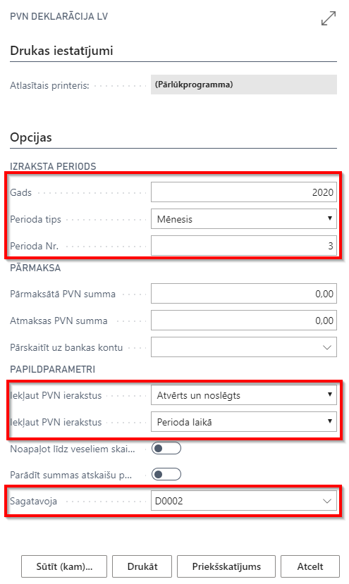
- Pārskatiet izdrukāto PVN deklarāciju
Sagatavojiet PVN atgriešanu
- Klikšķiniet uz pogas Meklēt Lapu vai Atskaiti...
- Ierakstiet PVN atgriešanas un izvēlieties to no sadaļas Pārskati un analīze 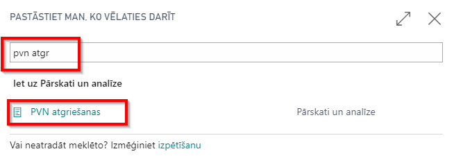
- PVN atgriešanas sarakstā nospiediet pogu Jauns 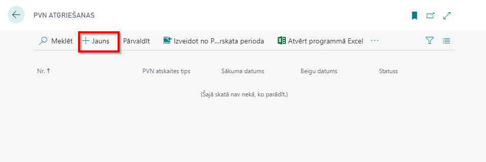
Aizpildiet Vispārīgās informācijas sadaļu
- Nr. - atgriešanas numuram jāparādās automātiski, atbilstoši PVN atskaites uzstādījumiem. Ja tas nenotiek, ierakstiet numuru manuāli.
- Versija - izvēlieties atskaites versiju
- Perioda gads - tiek ielasīts automātiski ar funkciju Piedāvāt rindas;
- Perioda tips - tiek ielasīts automātiski ar funkciju Piedāvāt rindas;
- Perioda Nr. - tiek ielasīts automātiski ar funkciju Piedāvāt rindas.
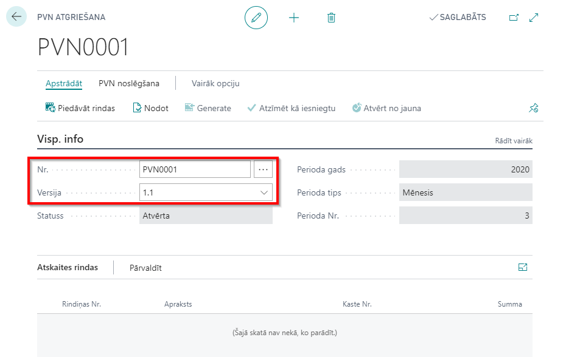
Izveidojiet rindas
- Rīkjoslā nospiediet pogu Piedāvāt rindas 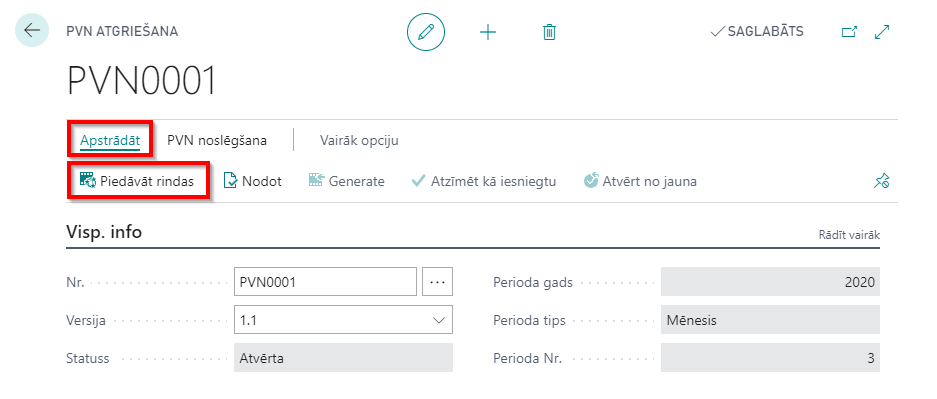
- Aizpildiet prasītos kritērijus
- Iekļ. PVN ierakstus - izvēlieties Atvērts un noslēgts;
- Iekļ. PVN ierakstus - izvēlieties Perioda laikā;
- PVN deklarācijas veidne - Izvēlieties PVN;
- PVN deklarācijas nosaukums - izvēlieties PVN2018;
- Perioda gads - ievadiet pārskata gada skaitli;
- Perioda tips - ievadiet pārskata tipu;
- Perioda Nr. - ievadiet perioda numuru;
- Sākuma datums - tiek ievadīts automātiski vadoties pēc augstāk norādītajiem raksturlielumiem;
- Beigu datums - tiek ievadīts automātiski vadoties pēc augstāk norādītajiem raksturlielumiem. 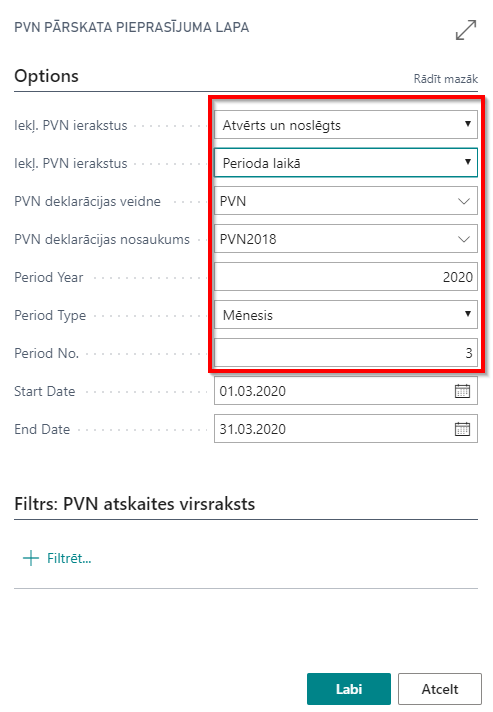
Sagatavoto rindu skaidrojums
- Rindiņas Nr. - rindu identificējošs numurs, kas saistīts ar
- Apraksts - rindiņas apraksts, identisks aprakstam VID PVN deklarācijā;
- Kaste Nr. - VID PVN deklarācijas rindiņas Nr.
- Summa - rindas summa
Eksportējiet PVN atgriešanu ar pielikumiem uz EDS
- Rīkojostā nospiediet pogu Nodot
- Nospiediet pogu Ģenerēt un aizpildiet eksportēšanas opcijas:
- Gads - ievadiet pārskata perioda gadu;
- Perioda tips - izvēlieties perioda tipu: mēnesis, ceturksnis, pusgads vai gads;
- Perioda Nr. - ievadiet perioda numuru;
- Pārmaksātā PVN summa - ja nepieciešams uzrādīt pārmaksāto PVN summu izdrukā, to var ievadīt šajā laukā manuāli. Šo lauku var arī atstāt tukšu un vēlāk ievadīt EDS manuāli;
- Atmaksas PVN summa - ja nepieciešams uzrādīt PVN summu atmaksai izdrukā, to var ievadīt šajā laukā manuāli. Šo lauku var arī atstāt tukšu un vēlāk ievadīt EDS manuāli;
- Pārskaitīt uz bankas kontu - izvēlieties bankas kontu, uz kuru VID pārskaitīs atmaksājamo summu. Šo lauku var atstāt tukšu;
- PVN bufera Nr. - izvēlieties PVN buferi (PVN buferim jābūt statusā Nodots un jāiekļaujas augstākminēto filtrēšanas parametru diapazonā);
- VIES Nr. - izvēlieties EK pārdošanas atskaiti (EK Pārdošanas atskaitei jābūt ar statusu Nodota un jāiekļaujas augstākminēto filtrēšanas parametru diapazonā);
- Noapaļot līdz veseliem skaitļiem - atspējots Latvijas likumdošanai;
- Parādīt summas atskaišu papildvalūtā - var tikt izmantots, ja vien EUR nav uzņēmuma vietējā valūta;
- Sagatavoja- Drukāšanas opcijas logā izvēlieties no saraksta darbinieku, kas sagatavo PVN deklarācijas pielikumu. Šajā gadījumā tiks izmantota sekojoša informācija no darbinieka kartiņas:
- Vārds
- Uzvārds
- Amats
- Telefona numurs. 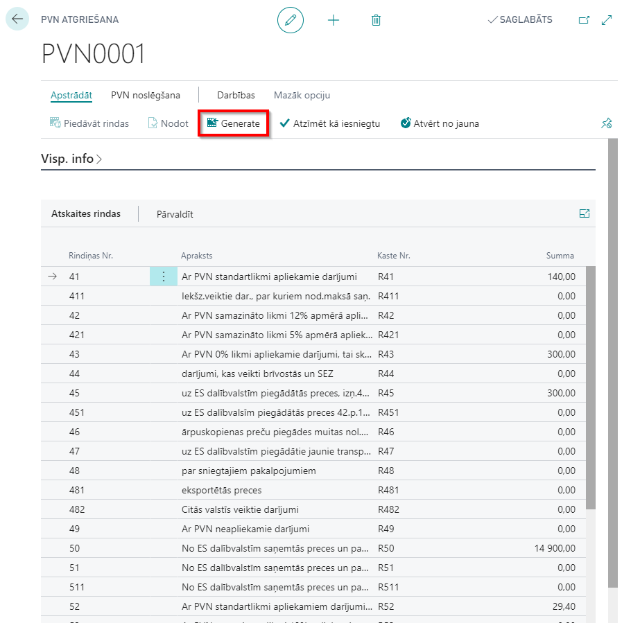 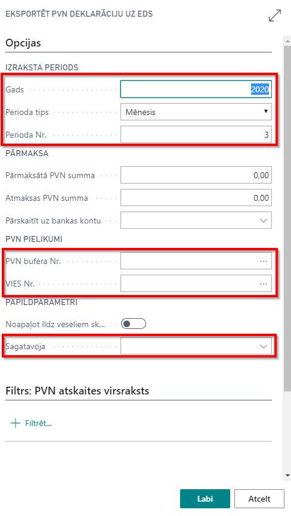
- Noklikšķiniet pogu Labi un fails tiks sagatavots atvēršanai un saglabāts, lai izmantoto to augšupielādei EDS. 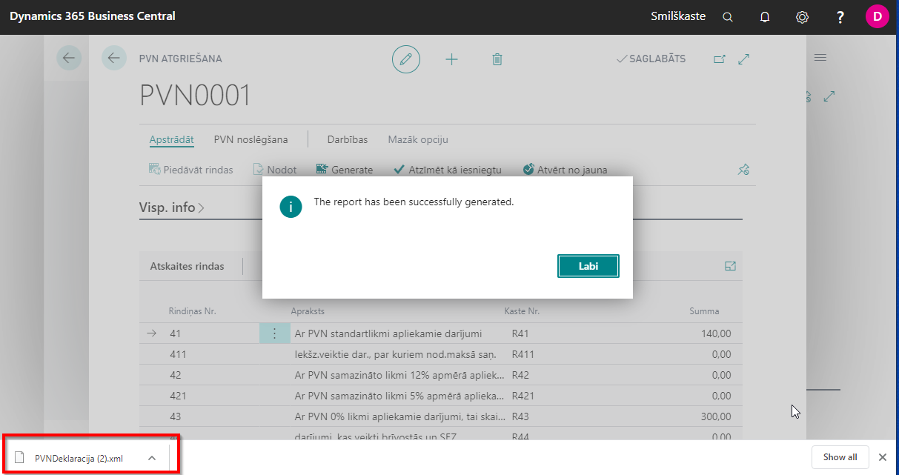
Piezīme
PVN atgriešanas eksportu var veikt tikai, tad, ja uzstādījumos Uzņēmuma informācijas logā ir ievadīts uzņēmuma reģistrācijas numurs.